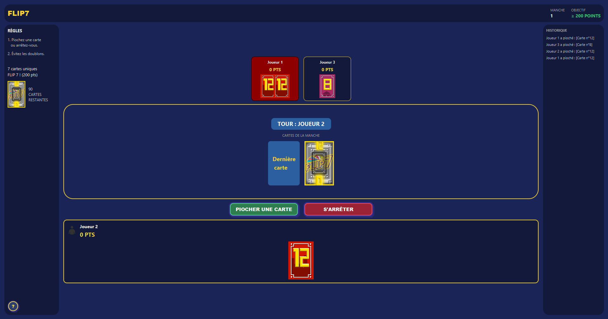
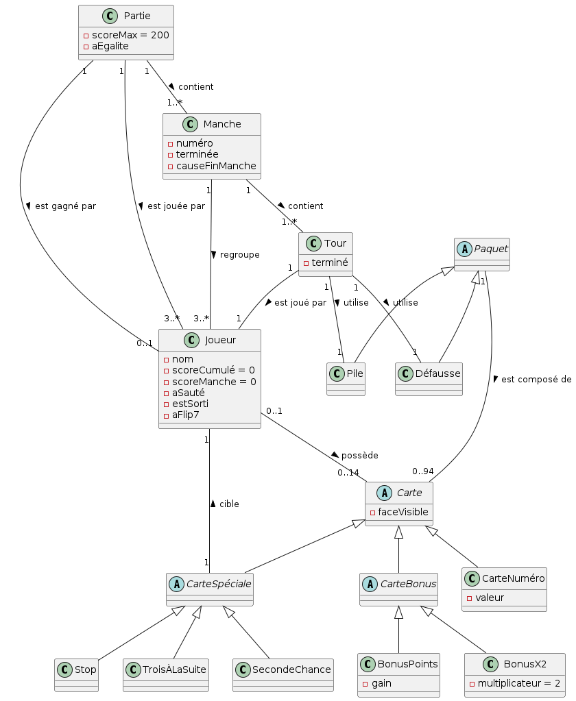
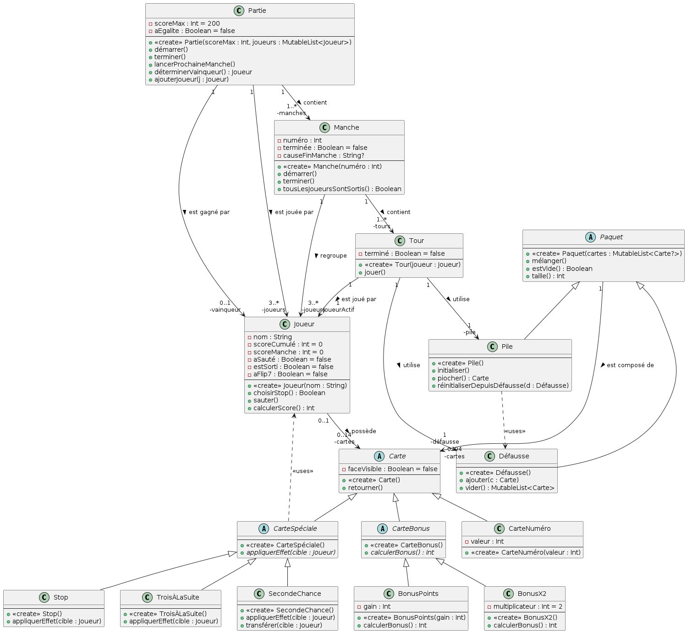
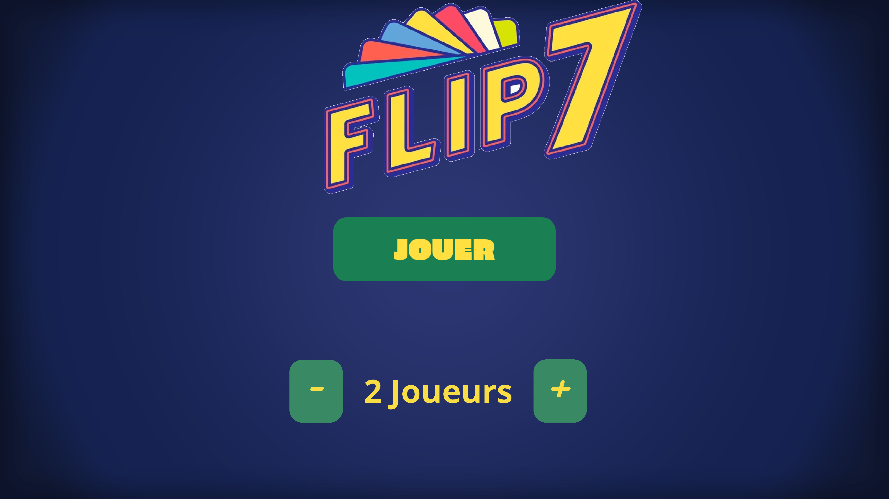
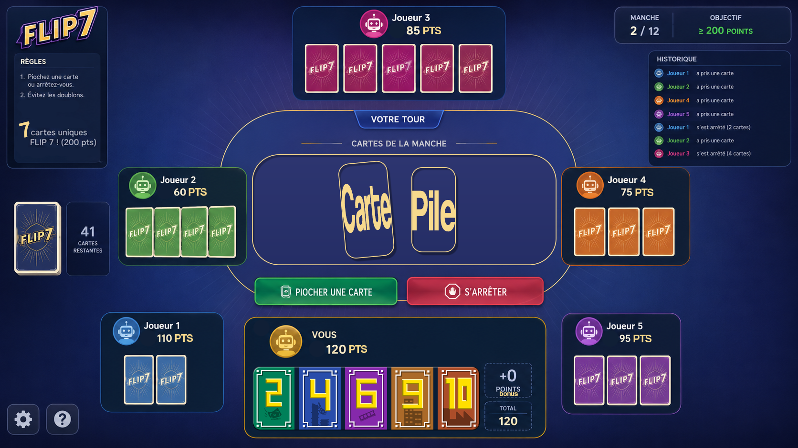
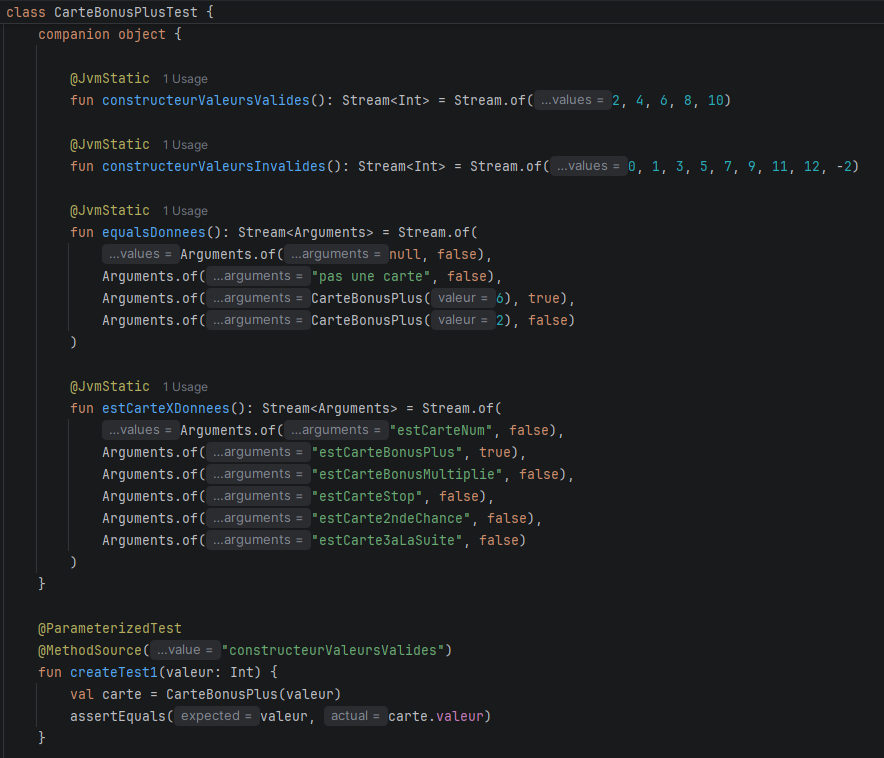
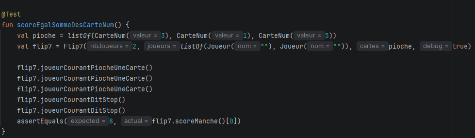

Dans le cadre de la SAE 201 de première année de BUT Informatique, nous avons eu pour mission d'analyser, de spécifier et d'implémenter le jeu de cartes Flip7 en Kotlin avec JavaFX. Ce projet de groupe couvrait l'ensemble du cycle de développement : analyse des règles, modélisation UML, maquettage de l'interface et tests unitaires.
Flip7 est un jeu de cartes où les joueurs piochent tour à tour pour accumuler des points. Le premier joueur à atteindre 200 points remporte la partie. Une partie est découpée en manches, chaque manche en tours. À chaque tour, le joueur choisit de piocher ou de s'arrêter - risquer un doublon, c'est perdre toutes ses cartes de la manche. Trois types de cartes composent le jeu : les CarteNuméro (valeurs de 0 à 12), les CarteBonus (bonus de points ou multiplication du score) et les CarteSpéciale (effets sur les autres joueurs : Stop, Trois à la Suite, Seconde Chance).
Le premier livrable consistait à analyser les règles du jeu et à produire deux diagrammes de classes UML : un diagramme d'analyse simplifié pour poser les grandes entités, et un diagramme détaillé reflétant fidèlement l'architecture du code. Nous avons modélisé l'ensemble de la hiérarchie de classes - Carte comme classe abstraite racine, spécialisée en CarteNuméro, CarteBonus et CarteSpéciale - ainsi que la gestion des paquets avec Pile et Défausse.


Nous avons conçu quatre maquettes représentant les différentes vues de l'application : la page d'accueil, la vue principale de jeu regroupant les cartes des joueurs et la pioche, la page des règles et la vue de fin de partie affichant les scores. Ces maquettes constituent une représentation théorique de l'interface finale.


Le troisième livrable portait sur la mise en place de tests unitaires. Nous avons utilisé des tables de décision pour identifier les plages de valeurs à tester pour chaque méthode, puis implémenté des tests paramétriques en JUnit avec Kotlin. Cette approche nous a permis de séparer les données de test de leur exécution et de couvrir facilement toutes les partitions de données. Les classes Carte présentaient une bonne testabilité grâce à leurs valeurs de retour simples, tandis que la classe Flip7 était plus complexe à tester en raison de ses nombreux paramètres.


Notre rendu final était légèrement différent de nos maquettes. Nous avons appris à créer des transitions avec JavaFX. Nous étions très satisfait du résultat. Nous avons obtenu une interface fonctionnelle permettant de jouer de façon fluide au jeu flip7.